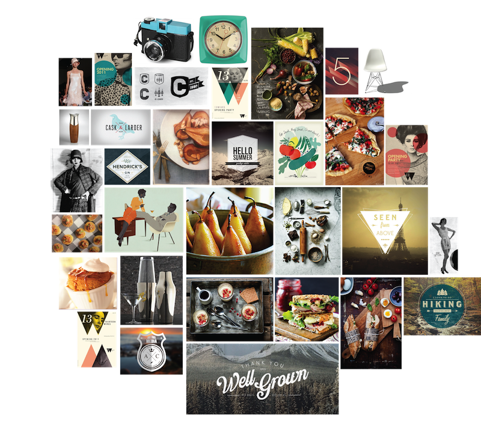

A concept for an iPad magazine focusing on old-fashioned recipes updated for modern palates and values.

Competitive Analysis
We began by looking at a variety of current cooking and food magazines as well as their iPad counterparts. We analyzed these magazines by looking at the average age and income of their target demographic. The existing magazines fell into three major groups. The first was high-end, expensive, gourmet magazines with a higher average age of readership. The second was mid-range magazines aimed at specialty niches such as vegetarians or health-conscious individuals. The third category was lower-end, accessible magazines aimed at family cooking. Through this competitive analysis, we were able to identify a need for a magazine targeted at a younger generation.
Concept Generation
We noticed a vintage trend in several media forms such as photos (Instagram), television (Mad Men), and fashion (ModCloth). We recognized that recipes also follow trends, and envisioned a magazine which brought back certain recipes which had been forgotten and updated them for a new generation. We developed two personas to inform our design choices, which you can read more about here.
Design Language Definition
We began by creating a moodboard of vintage elements combined with modern designs and noticed several overarching themes. These included texture, neutral colors, a mixture of typography and image, and clean geometric shapes.
Based on this moodboard, we developed a mostly neutral color palette and chose a mixture of fonts to use in our design.

We also experimented with geometric shapes for our logo and settled upon a clean type logo that could be used with or without a hexagonal shape.